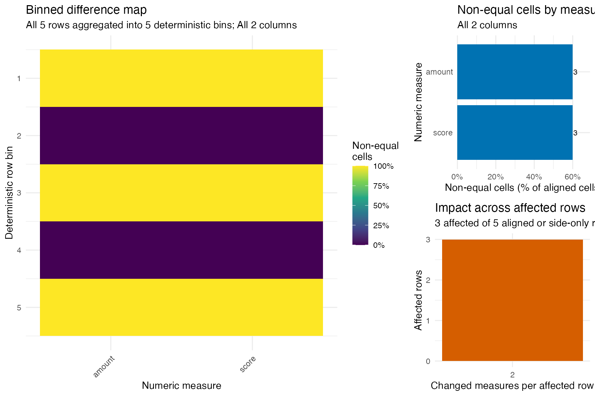
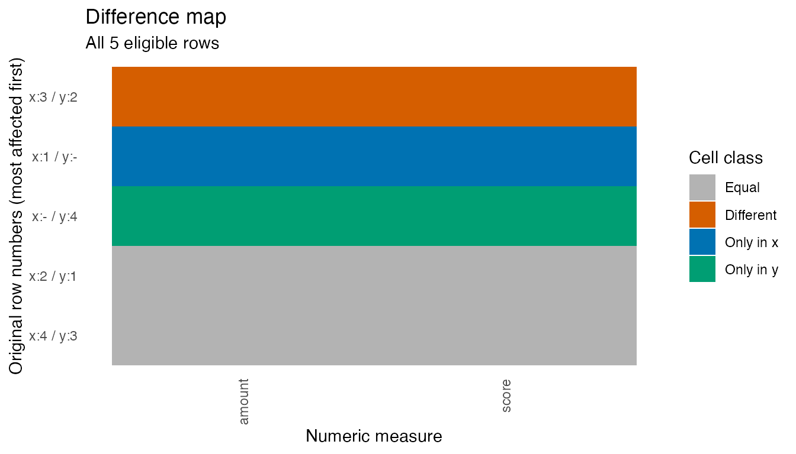

comparing-tables.Rmddaffiz compares numeric measures in two tables that
should be nearly identical. Every diagnostic derives from one long cell
table, and every difference retains the original row number from each
input.
This vignette follows the usual investigation from the overall result to the responsible measures, source records, and exact numeric cells.
library(daffiz)
baseline <- data.frame(
id = 1:4,
region = c("north", "south", "east", "west"),
amount = c(100, 200, 300, 400),
score = c(0.5, 0.6, 0.7, 0.8)
)
candidate <- data.frame(
id = 2:5,
region = c("south", "east", "west", "central"),
amount = c(200.02, 330, 400, 500),
score = c(0.6, 0.72, 0.8, 0.9)
)
cmp <- compare_dt(
baseline,
candidate,
abs_tol = c(.default = 0, amount = 0.05)
)
is_matching(cmp)
#> [1] FALSE
summary(cmp, max_cells = 3)
#> daffiz comparison: baseline -> candidate
#> Rows: 4 / 4 | numeric measures: 2 | compared cells: 6
#> Result: 6 non-equal cell(s) in 3 row(s) across 2 measure(s)
#> Identity (inferred): id, region
#> Measures (inferred): amount, score
#> Tolerance: abs amount=0.05, score=0.00 | rel 0
#> Unmatched rows: 1 only in baseline | 1 only in candidate
#> Leading baseline key profile: id
#> Leading candidate key profile: id
#>
#> Measures with differences
#> column n_diff n_x_only n_y_only fraction_diff max_abs_diff
#> <char> <int> <int> <int> <num> <num>
#> 1: amount 1 1 1 0.3333333 30.00
#> 2: score 1 1 1 0.3333333 0.02
#>
#> Rows with differences
#> .row_x .row_y row_type n_diff diff_columns max_abs_diff
#> <int> <int> <fctr> <int> <char> <num>
#> 1: 3 2 diff 2 amount,score 30
#> 2: 1 NA x_only 2 amount,score NA
#> 3: NA 4 y_only 2 amount,score NA
#>
#> Example cells
#> Key: <id, region, .metric>
#> id region .row_x .row_y .metric .value_x .value_y .diff .match_type
#> <int> <char> <int> <int> <char> <num> <num> <num> <fctr>
#> 1: 1 north 1 NA amount 100.0 NA NA x_only
#> 2: 1 north 1 NA score 0.5 NA NA x_only
#> 3: 3 east 3 2 amount 300.0 330 -30 diffThe report names the inferred identity and measure columns, the
tolerance policy, unmatched-row counts, and bounded samples. Here,
id and region form the identity because they
are not ordinary double columns. amount and
score are measures.
If those defaults are inappropriate, select the roles explicitly:
compare_dt(
baseline,
candidate,
by = "id",
compare = c("amount", "score"),
abs_tol = c(.default = 0, amount = 0.05)
)
#> daffiz comparison: baseline -> candidate
#> Rows: 4 / 4 | numeric measures: 2 | compared cells: 6
#> Result: 6 non-equal cell(s) in 3 row(s) across 2 measure(s)
#> Identity (explicit): id
#> Measures (explicit): amount, score
#> Tolerance: abs amount=0.05, score=0.00 | rel 0
#> Ignored after role resolution: region
#> Unmatched rows: 1 only in baseline | 1 only in candidate
#> Leading baseline key profile: id
#> Leading candidate key profile: id
#>
#> Measures with differences
#> column n_diff n_x_only n_y_only fraction_diff max_abs_diff
#> <char> <int> <int> <int> <num> <num>
#> 1: amount 1 1 1 0.3333333 30.00
#> 2: score 1 1 1 0.3333333 0.02
#>
#> Rows with differences
#> .row_x .row_y row_type n_diff diff_columns max_abs_diff
#> <int> <int> <fctr> <int> <char> <num>
#> 1: 3 2 diff 2 amount,score 30
#> 2: 1 NA x_only 2 amount,score NA
#> 3: NA 4 y_only 2 amount,score NA
#>
#> Example cells
#> Key: <id, .metric>
#> id .row_x .row_y .metric .value_x .value_y .diff .match_type
#> <int> <int> <int> <char> <num> <num> <num> <fctr>
#> 1: 1 1 NA amount 100.0 NA NA x_only
#> 2: 1 1 NA score 0.5 NA NA x_only
#> 3: 3 3 2 amount 300.0 330.00 -30.00 diff
#> 4: 3 3 2 score 0.7 0.72 -0.02 diff
#> 5: 5 NA 4 amount NA 500.00 NA y_only
column_summary(cmp)
#> column n_cells n_compared n_equal n_diff n_x_only n_y_only fraction_diff
#> <char> <int> <int> <int> <int> <int> <int> <num>
#> 1: amount 5 3 2 1 1 1 0.3333333
#> 2: score 5 3 2 1 1 1 0.3333333
#> mean_diff mean_abs_diff rmse max_abs_diff p95_abs_diff
#> <num> <num> <num> <num> <num>
#> 1: -10.006666667 10.006666667 17.32051192 30.00 27.002
#> 2: -0.006666667 0.006666667 0.01154701 0.02 0.018
diff_columns(cmp)
#> column n_cells n_compared n_equal n_diff n_x_only n_y_only fraction_diff
#> <char> <int> <int> <int> <int> <int> <int> <num>
#> 1: amount 5 3 2 1 1 1 0.3333333
#> 2: score 5 3 2 1 1 1 0.3333333
#> mean_diff mean_abs_diff rmse max_abs_diff p95_abs_diff
#> <num> <num> <num> <num> <num>
#> 1: -10.006666667 10.006666667 17.32051192 30.00 27.002
#> 2: -0.006666667 0.006666667 0.01154701 0.02 0.018column_summary() includes exact cell counts, mismatch
fractions, signed and absolute mean differences, RMSE, maximum absolute
difference, and the 95th percentile absolute difference.
diff_columns() keeps only affected measures and ranks the
largest problems first.
diff_rows(cmp)
#> id region .row_x .row_y row_type n_columns n_diff diff_columns
#> <int> <char> <int> <int> <fctr> <int> <int> <list>
#> 1: 3 east 3 2 diff 2 2 amount,score
#> 2: 1 north 1 NA x_only 2 2 amount,score
#> 3: 5 central NA 4 y_only 2 2 amount,score
#> mean_abs_diff max_abs_diff
#> <num> <num>
#> 1: 15.01 30
#> 2: NA NA
#> 3: NA NA
diff_rows(cmp, view = "paired")
#> id region .row_x .row_y row_type n_columns n_diff diff_columns
#> <int> <char> <int> <int> <fctr> <int> <int> <list>
#> 1: 3 east 3 2 diff 2 2 amount,score
#> 2: 1 north 1 NA x_only 2 2 amount,score
#> 3: 5 central NA 4 y_only 2 2 amount,score
#> mean_abs_diff max_abs_diff amount_x amount_y score_x score_y
#> <num> <num> <num> <num> <num> <num>
#> 1: 15.01 30 300 330 0.7 0.72
#> 2: NA NA 100 NA 0.5 NA
#> 3: NA NA NA 500 NA 0.90
diff_indices(cmp, "x")
#> [1] 1 3
original_rows(cmp, "x")
#> id region amount score .row_x
#> <int> <char> <num> <num> <int>
#> 1: 1 north 100 0.5 1
#> 2: 3 east 300 0.7 3
x_only(cmp)
#> id region amount score .row_x
#> <int> <char> <num> <num> <int>
#> 1: 1 north 100 0.5 1
y_only(cmp)
#> id region amount score .row_y
#> <int> <char> <num> <num> <int>
#> 1: 5 central 500 0.9 4.row_x and .row_y always refer to positions
in baseline and candidate before any sorting
or melting. original_rows() uses private snapshots, so the
recovered records retain the original column order, classes, and values
even if a caller later modifies a data.table by
reference.
diff_cells(cmp)
#> Key: <id, region, .metric>
#> id region .row_x .row_y .metric .value_x .value_y .diff .abs_diff
#> <int> <char> <int> <int> <char> <num> <num> <num> <num>
#> 1: 1 north 1 NA amount 100.0 NA NA NA
#> 2: 1 north 1 NA score 0.5 NA NA NA
#> 3: 3 east 3 2 amount 300.0 330.00 -30.00 30.00
#> 4: 3 east 3 2 score 0.7 0.72 -0.02 0.02
#> 5: 5 central NA 4 amount NA 500.00 NA NA
#> 6: 5 central NA 4 score NA 0.90 NA NA
#> .rel_diff .match_type
#> <num> <fctr>
#> 1: NA x_only
#> 2: NA x_only
#> 3: 0.09090909 diff
#> 4: 0.02777778 diff
#> 5: NA y_only
#> 6: NA y_only
diff_cells(cmp, columns = "amount")
#> Key: <id, region, .metric>
#> id region .row_x .row_y .metric .value_x .value_y .diff .abs_diff
#> <int> <char> <int> <int> <char> <num> <num> <num> <num>
#> 1: 1 north 1 NA amount 100 NA NA NA
#> 2: 3 east 3 2 amount 300 330 -30 30
#> 3: 5 central NA 4 amount NA 500 NA NA
#> .rel_diff .match_type
#> <num> <fctr>
#> 1: NA x_only
#> 2: 0.09090909 diff
#> 3: NA y_onlyEach row is one numeric cell classified as diff,
x_only, or y_only. all_cells()
also includes equal cells, which supply the exact denominators for the
summaries.
Duplicated identities need an explicit policy. The default
"pair" policy sorts and pairs duplicated records
deterministically but warns that the pairing is heuristic.
"error" stops. "report" records and excludes
ambiguous groups; because those records were not compared, the resulting
comparison is incomplete and is_matching() returns
FALSE.
The optional plotting layer uses the same accessor data. Its default overview combines an Amelia-style difference-incidence map with measure mismatch and affected-row summaries:
if (requireNamespace("ggplot2", quietly = TRUE)) {
plot_diff(cmp)
}
The detailed map puts observations on rows and numeric measures on
columns. Measures are ranked by non-equal incidence. If
max_rows is exceeded, the most affected rows are selected
deterministically and the subtitle says so.
if (requireNamespace("ggplot2", quietly = TRUE)) {
plot_diff(cmp, type = "matrix", max_rows = 100)
}
Use plot_data() when the aggregate itself is more useful
than the default graphic. It works without ggplot2 and
exposes exact top-N, row-selection, and row-bin metadata.
plot_data(cmp, type = "columns")
#> column column_rank n_cells n_non_equal fraction_non_equal n_compared n_equal
#> <char> <int> <int> <int> <num> <int> <int>
#> 1: amount 1 5 3 0.6 3 2
#> 2: score 2 5 3 0.6 3 2
#> n_diff n_x_only n_y_only fraction_diff mean_diff mean_abs_diff
#> <int> <int> <int> <num> <num> <num>
#> 1: 1 1 1 0.3333333 -10.006666667 10.006666667
#> 2: 1 1 1 0.3333333 -0.006666667 0.006666667
#> rmse max_abs_diff p95_abs_diff n_columns_total n_columns_shown
#> <num> <num> <num> <int> <int>
#> 1: 17.32051192 30.00 27.002 2 2
#> 2: 0.01154701 0.02 0.018 2 2
#> truncated
#> <lgcl>
#> 1: FALSE
#> 2: FALSEexpect_dt_equal() exposes the same semantics inside
testthat:
expect_dt_equal(baseline, baseline)Failure messages contain bounded column, row, and cell diagnostics and carry the complete comparison object as a condition attribute.
The canonical result has approximately
n_rows * n_measures rows. Both inputs are melted and joined
in memory, and equal cells are retained for exact summary denominators.
Narrow very wide comparisons with compare or
exclude.
For wide tables, batch limits how many measures are
melted and joined at one time while preserving the complete result. For
example, compare_dt(x, y, batch = 10) processes ten
measures per batch. Batching lowers the peak size of construction
intermediates; it does not reduce the final canonical cell table.
Benchmarks measured about 64 retained bytes per unique-key cell and
much higher working memory during construction. A projected result above
10 million cells therefore warns by default. Set a different warning
threshold with options(daffiz.max_cells = ...) after
considering the input width, batch size, and available memory.